layout: true class: top --- <h1>Bayesian Models in Insurance</h1> <br><br><br> <h3>Jason Ash, FSA, MAAA, CERA</h3> <img src="images/predictive-analytics-logo-black.png" class="pull-right" style="width: 30%; opacity: 0.75;"> --- <h3 class="slide-header">About the speaker</h3> .left-column[ <img src="images/headshot.jpg" style="width: 100%; opacity: 0.95;"> ] .right-column[ <p>Actuary & Data Scientist.</p> <p>Founder of Ash Analytics, consulting for insurtech and fintech companies.</p> <p>Former Milliman consultant and analytics manager at fintech and insurtech startups.</p> <p>Writes at <a href="www.jtash.com">www.jtash.com</a>.</p> ] --- <h3 class="slide-header">Objectives</h3> Introduce key Bayesian concepts: prior, likelihood, posterior -- Demonstrate probabilistic programming in Python using pymc3 -- Reinforce concepts with concrete examples --- <h3 class="slide-header">Motivations for Bayesian Techniques</h3> Solve for **distributions**, rather than point estimates -- **Quantify uncertainty** in our analysis -- **Incorporate prior knowledge** relevant to the problem --- <h1><span class="text-muted" style="font-weight: 200;">Key Concepts:</span><br>Prior, Likelihood, Posterior</h1> --- <h3 class="slide-header">Prior</h3> The hypothesis before observing data. -- <hr> - Find a coin on the street $\rightarrow$ probably fair (50% heads). -- <hr> - Find a coin in a magician's shop $\rightarrow$ unlikely to be fair. --- <h3 class="slide-header">Likelihood</h3> The probability of observing the data, given the hypothesis. -- <hr> - Probability of 52 heads / 48 tails with fair coin $\rightarrow$ high - Probability of 52 heads / 48 tails with magician's coin $\rightarrow$ low -- <hr> - Probability of 12 heads / 88 tails with fair coin $\rightarrow$ low - Probability of 12 heads / 88 tails with magician's coin $\rightarrow$ high --- <h3 class="slide-header">Posterior</h3> The probability that the hypothesis is correct, given the data. -- <hr> - Probability of fair coin given 52 heads / 48 tails $\rightarrow$ high - Probability of magician's coin given 52 heads / 48 tails $\rightarrow$ low -- <hr> - Probability of fair coin given 12 heads / 88 tails $\rightarrow$ low - Probability of magician's coin given 12 heads / 88 tails $\rightarrow$ high --- <h3 class="slide-header">All Together Now</h3> $$\text{Posterior}\propto \text{Likelihood}\times\text{Prior}$$ -- <hr> The posterior distribution is the updated hypothesis<br>based on our original hypothesis _and_ the data we observed. -- - More data $\rightarrow$ rely primarily on what you observe - Less data $\rightarrow$ rely primarily on the prior hypothesis --- <h1><span class="text-muted" style="font-weight: 200;">Example:</span><br>Coin Flipping</h1> --- <h3 class="slide-header">Coin flipping</h3> <blockquote>Suppose you flip a coin 20 times and observe 12 heads.</blockquote> -- **What is the probability of flipping "heads" next?** --- <h3 class="slide-header">Coin flipping - prior</h3> **Prior:** hypothesis of $P(\text{heads})$ before we see data. -- <hr> <p class="c0 font-italic">"I'm confident the true probability lies between 0.4 and 0.6"</p> <p class="c1 font-italic">"Most coins are fair, but I'm willing to consider a wider range."</p> <p class="c2 font-italic">"I want to assume as little as possible before continuing."</p> --- <h3 class="slide-header">Coin flipping - prior</h3> **Prior:** hypothesis of $P(\text{heads})$ before we see data. <hr> <img src="images/coin_prior.png" class="img-fluid mx-auto d-block" style="max-width: 75%;"> --- <h3 class="slide-header">Coin flipping - prior</h3> **Prior:** hypothesis of $P(\text{heads})$ before we see data. <hr> $$Prior \sim Beta(\alpha, \beta)$$ ```python from scipy.stats import beta # strong prior beta(alpha=50, beta=50) # moderate prior beta(alpha=10, beta=10) # weak prior (equivalent to uniform distribution on [0,1]) beta(alpha=1, beta=1) ``` --- <h3 class="slide-header">Coin flipping - likelihood</h3> **Likelihood:** odds of observing the data, given the hypothesis. <hr> $$\text{Likelihood}\sim \text{Bernoulli}(p)$$ ```python from scipy.stats import bernoulli # likelihood is a bernoulli random variable with parameter, p bernoulli(p=p) ``` --- <h3 class="slide-header">Coin flipping - posterior</h3> **Posterior:** updated hypothesis after we observe data. -- <hr> 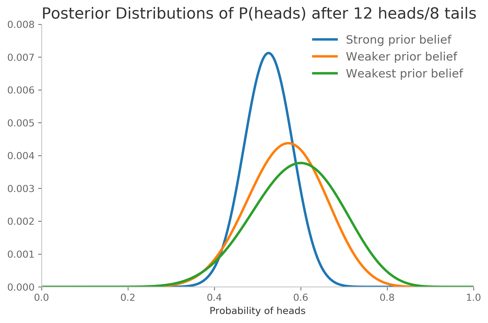 --- <h3 class="slide-header">Coin flipping - prior/posterior comparison</h3> <div class="row"> <div class="col-6"> <img src="images/coin_prior.png" class="img-fluid mx-auto d-block" style="max-width: 100%;"> </div> <div class="col-6"> </div> </div> --- <h3 class="slide-header">Why Now?</h3> $$P(A|B)\times P(B)=P(B|A)\times P(A)$$ Bayes's theorem dates back to 1763. -- Many bayesian equations cannot be solved analytically. In other fields, we use Monte Carlo methods to solve complex integrals. -- Fast, reliable stochastic solvers are widely available through **Probabilistic Programming Languages**. --- <h1><span class="text-muted" style="font-weight: 200;">Probabilistic Programming</span><br>Python and pymc3</h1> --- <h3 class="slide-header">pymc3</h3> Open source probabilistic programming language Provides comprehensive tools to build Bayesian models Robust and fast Markov chain Monte Carlo solving algorithms Easy to install and use directly within Python. ```python # use pymc3 by importing the library import pymc3 as pm ``` --- <h3 class="slide-header">pymc3 - fundamentals</h3> Code closely mirrors mathematical notation. -- $$x \sim N(0,1) \\\ y \sim \text{Poisson}(20) \\\ z = 2x + y$$ -- ```python import pymc3 as pm # create pymc3 random variables x = pm.Normal(name='x', mu=0, sd=1) y = pm.Poisson(name='y', mu=20) z = pm.Deterministic(name='z', var=2*x+y) ``` --- <h3 class="slide-header">pymc3 - model setup</h3> Coin flipping example using pymc3. -- ```python with pm.Model() as model: ``` --- <h3 class="slide-header">pymc3 - prior</h3> Create a random variable for the prior distribution of $p$. ```python with pm.Model() as model: # prior distribution of "p", the probability of flipping heads p = pm.Beta('p', alpha=1, beta=1) ``` --- <h3 class="slide-header">pymc3 - likelihood</h3> Write the likelihood function. ```python with pm.Model() as model: # prior distribution of "p", the probability of flipping heads p = pm.Beta('p', alpha=1, beta=1) # likelihood of observing heads, given p # we also pass our observed data to update the posterior likelihood = pm.Bernoulli('likelihood', p=p, observed=[1]*12 + [0]*8) ``` --- <h3 class="slide-header">pymc3 - sampling/posterior</h3> Use sampling to calculate the posterior distribution. ```python with pm.Model() as model: # prior distribution of "p", the probability of flipping heads p = pm.Beta('p', alpha=1, beta=1) # likelihood of observing heads, given p # we also pass our observed data to update the posterior likelihood = pm.Bernoulli('likelihood', p=p, observed=[1]*12 + [0]*8) # sample from the posterior using MCMC trace = pm.sample() ``` --- <h3 class="slide-header">pymc3 - visualization</h3> 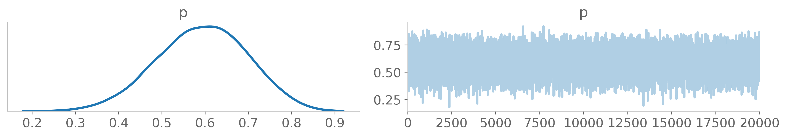 <div class="row"> <div class="col-6 text-center">Posterior Density Plot</div> <div class="col-6 text-center">Markov chain Monte Carlo samples</div> </div> --- <h3 class="slide-header">pymc3 - validation</h3> Compare sampled (Monte Carlo) posterior vs. analytic posterior 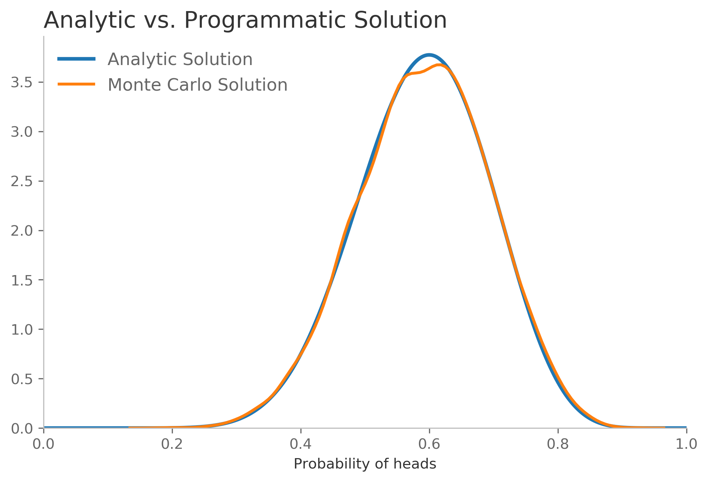 --- <h1><span class="text-muted" style="font-weight: 200;">Example:</span><br>Mortality analysis</h1> --- <h3 class="slide-header">Mortality analysis - setup</h3> <blockquote>Your company has a large block of life insurance policies.<br>Each policy is sold by one of two agencies: $A$ or $B$.</blockquote> -- <blockquote>Last year, mortality rates of policyholders from agency $B$ were higher than those from agency $A$, even after you controlled for age.</blockquote> -- **What is the probability that a policyholder from agency $B$ has higher mortality than one from agency $A$?** --- <h3 class="slide-header">Mortality analysis - setup</h3> Suppose you observed the following from last year - 49 / 5000 policyholders from group $A$ died - 16 / 1200 policyholders from group $B$ died --- <h3 class="slide-header">Mortality analysis - pymc3 model</h3> ```python with pm.Model() as model: # prior distribution for p for group A and B p_a = pm.Beta(name='p_a', alpha=1, beta=1) p_b = pm.Beta(name='p_b', alpha=1, beta=1) # likelihood for group A and B likelihood_a = pm.Bernoulli( name='likelihood_a', p=p_a, observed=[1]*49+[0]*4951 ) likelihood_b = pm.Bernoulli( name='likelihood_b', p=p_b, observed=[1]*16+[0]*1184 ) # sample from both distributions trace = pm.sample() ``` --- <h3 class="slide-header">Mortality analysis - weak prior</h3> 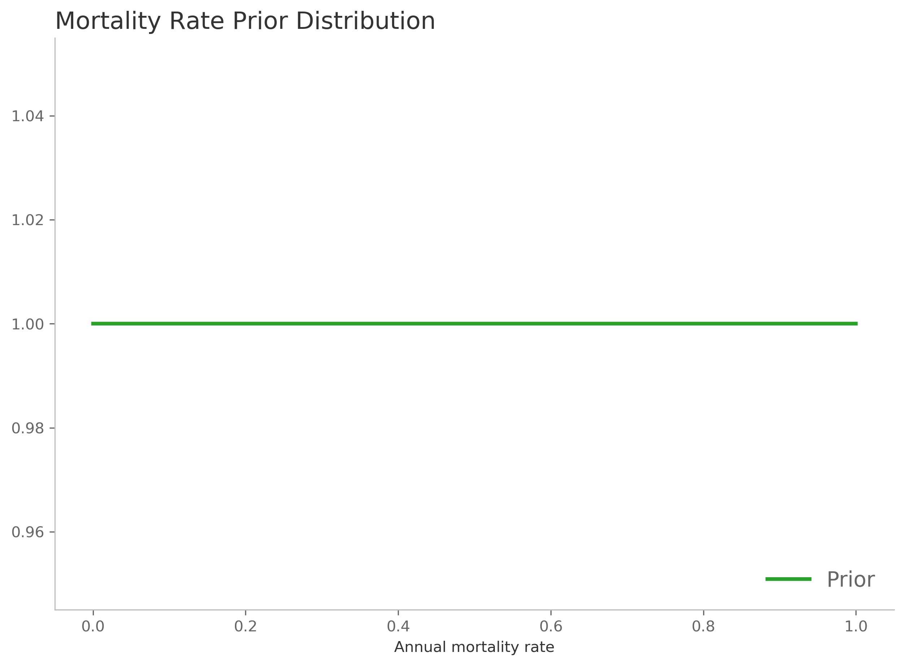 --- <h3 class="slide-header">Mortality analysis - posterior</h3> 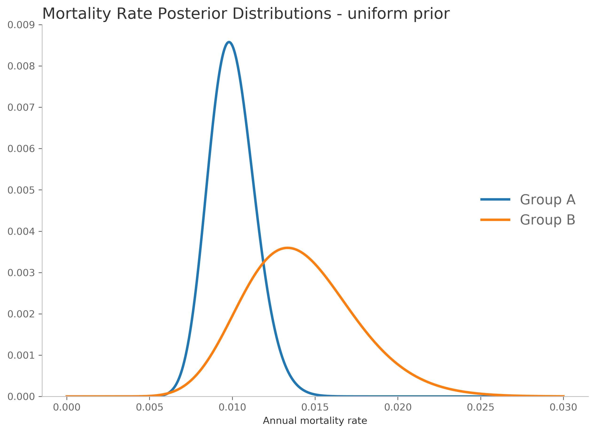 --- <h3 class="slide-header">Mortality analysis - results</h3> **What is the probability that a policyholder from agency $B$ has higher mortality than one from agency $A$?** -- i.e. if you draw a value from $A$ and $B$, how often is $B>A$? -- Solve by sampling values from each distribution. ```python # count the pairs of samples where B is greater than A # trace['p_a'] is the sampled points from the posterior of A count = trace['p_b'] > trace['p_a'] result = count / len(trace) 0.8742 ``` -- Mortality from group $B$ will be higher roughly 87% of the time. --- <h3 class="slide-header">But wait</h3> As actuaries, we know a lot about mortality. -- $Beta(1, 1)$ $\rightarrow$ all rates from 0% to 100% equally likely. -- Historical average rate is ~1.1%. Variance is small. -- We should calibrate a prior distribution using historical data. --- <h3 class="slide-header">Mortality analysis - strong prior</h3> Subjective prior with $E[X] = 1.136%$, small variance. 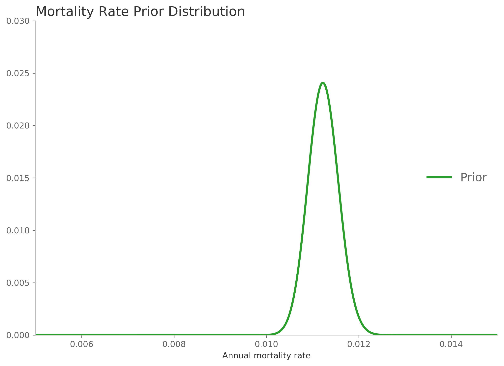 --- <h3 class="slide-header">Mortality analysis - pymc3 model</h3> ```python with pm.Model() as model: # prior distribution for p for group A and B # new, stronger prior using social security data p_a = pm.Beta(name='p_a', alpha=1136, beta=100000) p_b = pm.Beta(name='p_b', alpha=1136, beta=100000) # likelihood for group A and B likelihood_a = pm.Bernoulli( name='likelihood_a', p=p_a, observed=[1]*49+[0]*4951 ) likelihood_b = pm.Bernoulli( name='likelihood_b', p=p_b, observed=[1]*16+[0]*1184 ) # sample from both distributions trace = pm.sample() ``` --- <h3 class="slide-header">Mortality analysis - posterior</h3> 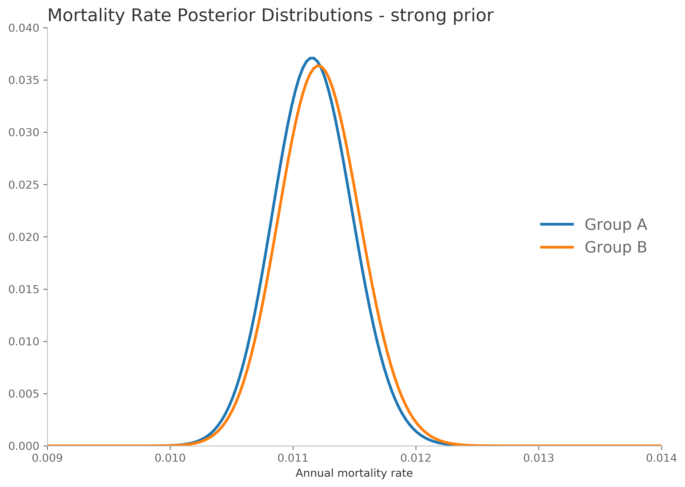 --- <h3 class="slide-header">Mortality analysis - comparison</h3> - Strong prior $\rightarrow$ posterior closer to historical distribution. - Weak prior $\rightarrow$ posterior closer to observed data. <div class="row"> <div class="col-6"> </div> <div class="col-6"> </div> </div> --- <h3 class="slide-header">Mortality analysis - results</h3> ```python # count the pairs of samples where B is greater than A count = trace['p_b'] > trace['p_a'] result = count / len(trace) 0.54466 ``` Under the strong prior, $B$ is greater than $A$ 54% of the time. Likely not enough for drastic action, but worth monitoring. --- <h3 class="slide-header">Takeaways</h3> Prior distributions have a large impact on results. This presents opportunities and responsibilities for the modeler. -- <div class="row"> <div class="col-6"> <h5>Opportunities</h5> <ul> <li>Leverage historical data to make better inferences</li> <li>Build richer models of potential future outcomes</li> </ul> </div> <div class="col-6"> <h5>Responsibilities</h5> <ul> <li>Test sensitivities to various prior distributions</li> <li>Be explicit about the assumptions used and the conclusions drawn</li> </ul> </div> </div> --- <h1><span class="text-muted" style="font-weight: 200;">Example:</span><br>Bayesian Linear Regression</h1> --- <h3 class="slide-header">Linear Regression - classic approach</h3> $$y=mx+b+\epsilon$$ -- - $y$ is the dependent variable - $x$ is the independent variable, or model feature(s) - $m$ is the slope of the line - $b$ is the intercept - $\epsilon$ is a normally distributed error term -- Objective is to solve for the _best values_ of $m$ and $b$. --- <h3 class="slide-header">Linear Regression - Bayesian approach</h3> $$Y \sim N(mx+b, \sigma^2)$$ -- - $Y$ is a normally distributed random variable - $\sigma^2$ is the variance of the estimator -- Objective is to solve for _distributions_ of $m$, $b$, and $\sigma$. --- <h3 class="slide-header">Linear Regression - sample data</h3> "Hidden" parameters: - $m=2$ - $b=-1$ - $\sigma=0.75$ ```python def generate_linear_data(n, m=2, b=-1, mu=0, std=1, random_state=42): """Return arrays for x and y of length n""" x = np.linspace(0, 1, n) y = b + m*x + norm(mu, std).rvs(n, random_state) return x, y # generate 50 linear data points with noise added x, y = generate_linear_data(n=50, m=2, b=-1, std=0.75) ``` --- <h3 class="slide-header">Linear Regression - sample data</h3> 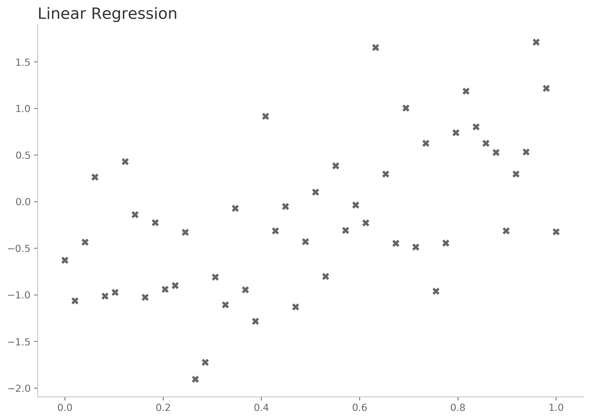 --- <h3 class="slide-header">Linear Regression - classic fit</h3> 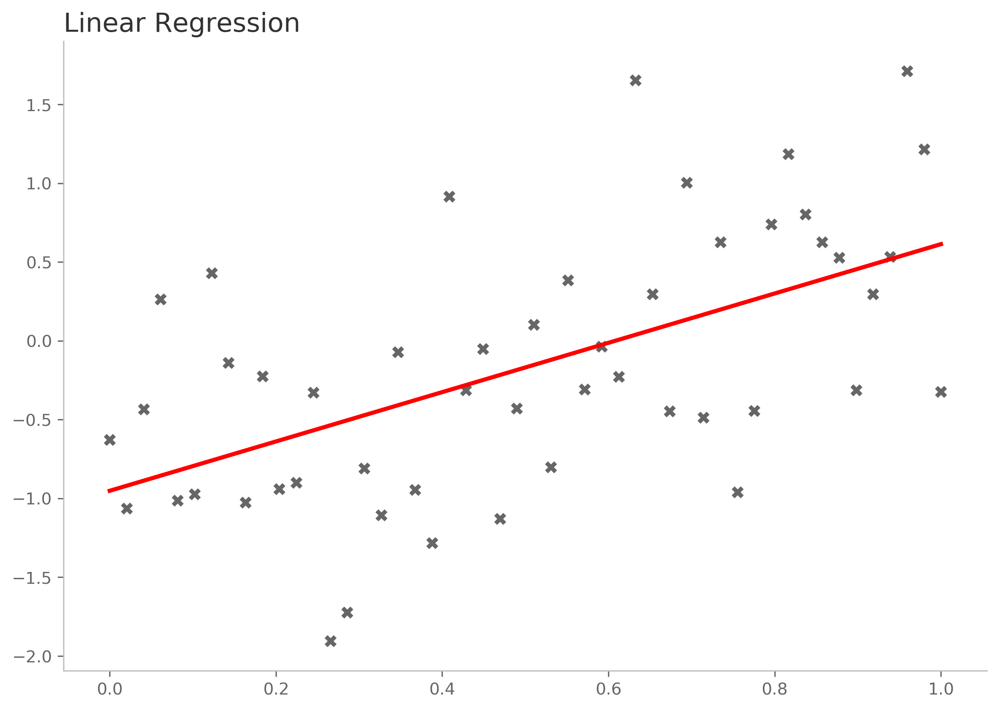 --- <h3 class="slide-header">Linear Regression - pymc3 model</h3> ```python with pm.Model() as model: # prior distributions sigma = pm.HalfCauchy('sigma', beta=10) slope = pm.Normal('slope', mu=0, sd=20) intercept = pm.Normal('intercept', mu=0, sd=20) # likelihood function likelihood = pm.Normal( 'likelihood', mu=intercept + slope*x, sd=sigma, observed=y ) # sampling step trace = pm.sample() ``` --- <h3 class="slide-header">Linear Regression - pymc3 fit</h3> 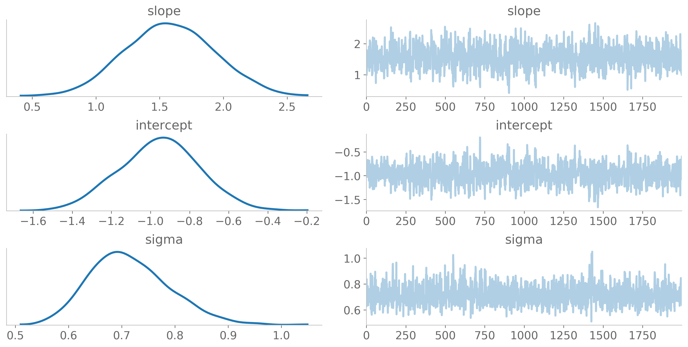 --- <h3 class="slide-header">Linear Regression - pymc3 fit</h3> 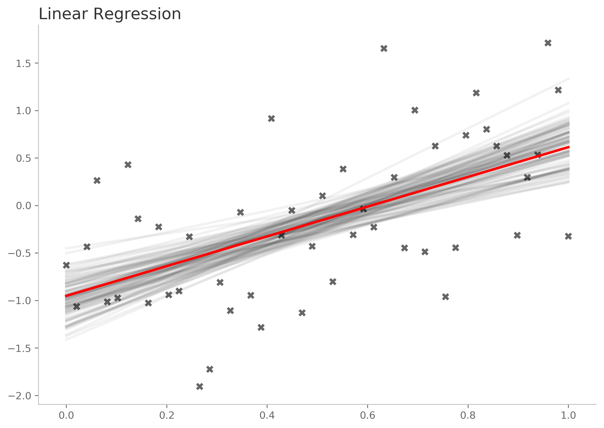 --- <h3 class="slide-header">Takeaways</h3> Classic fitting methods have a hard time conveying uncertainty. Metrics like $R^2$ can't tell you the distribution of a parameter. -- <hr> Distributions of outcomes quantify uncertainty. Quantifying uncertainty can lead to better decisions. Example: apply a value function to a range of outcomes to optimize a decision. --- <h1><span class="text-muted" style="font-weight: 200;">Example:</span><br>Logistic Regression</h1> --- <h3 class="slide-header">Logistic Regression - sample data</h3> ```python def sigmoid(x): return 1 / (1 + np.exp(-x)) def generate_logistic_data(n, alpha=0, beta=1, mu=0, std=1, seed=42): """Return logistic arrays for x and y of length n""" x = norm(loc=mu, scale=std).rvs(size=n, random_state=seed) x = np.sort(x) z = alpha + x*beta y = binom(n=1, p=sigmoid(z)).rvs(random_state=seed) return x, y # generate random data points x, y = generate_logistic_data(100, alpha=-1, beta=1.5, std=2) ``` --- <h3 class="slide-header">Logistic Regression - data</h3> 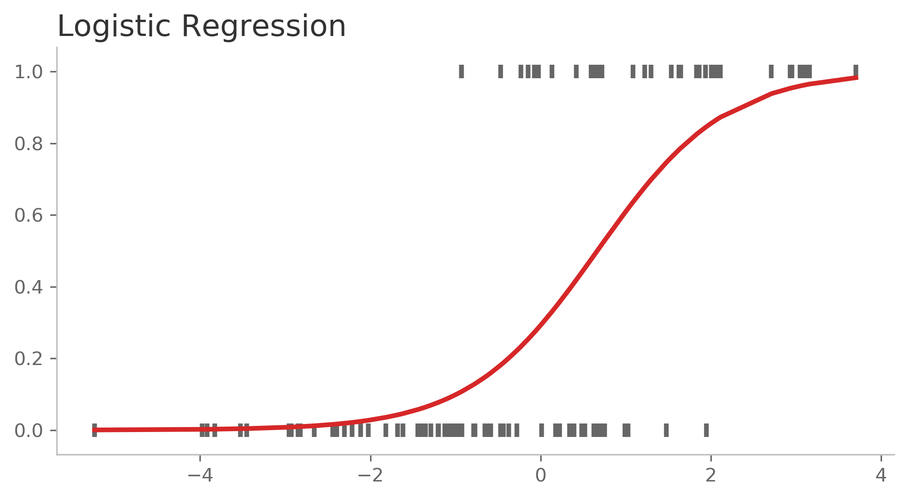 --- <h3 class="slide-header">Logistic Regression - pymc3 model</h3> ```python with pm.Model() as model: # prior distributions alpha = pm.Normal('alpha', mu=0, sd=10) beta = pm.Normal('beta', mu=0, sd=10) mu = alpha + x*beta # likelihood function likelihood = pm.Bernoulli('y', p=pm.math.sigmoid(mu), observed=y) # sample trace = pm.sample() ``` --- <h3 class="slide-header">Logistic Regression - results</h3> 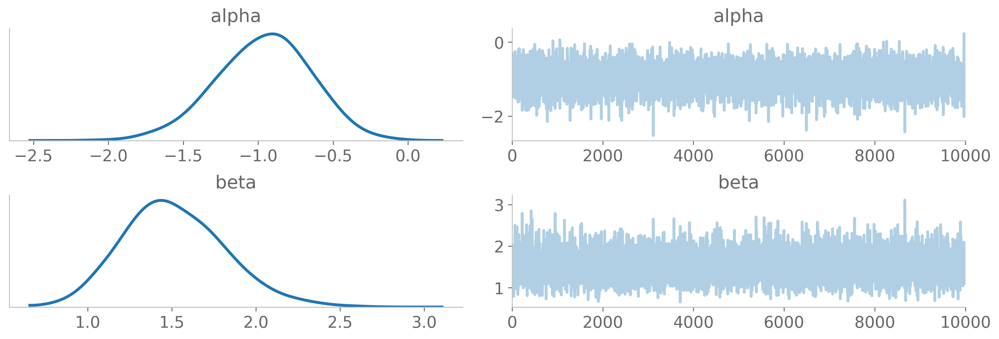 --- <h3 class="slide-header">Logistic Regression - results</h3> 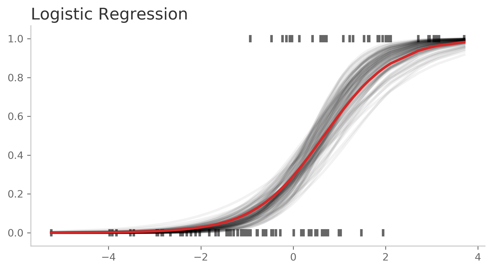 --- <h1><span class="text-muted" style="font-weight: 200;">Example:</span><br>Robust Regression</h1> --- <h3 class="slide-header">Robust Regression</h3> Before: $Y \sim N(mx+b, \sigma^2)$ After: $Y \sim \text{Student's t}(mx+b, \sigma^2, \nu)$ - adds the parameter $\nu$ for degrees of freedom - converges to Normal as $\nu \rightarrow \infty$ - has wider tails than Normal distribution - is more robust to outliers --- <h3 class="slide-header">Student's t-distribution</h3> <div class="text-center"><span class="text-primary"><strong>Normal</strong></span> vs. <span class="text-danger"><strong>Student's t</strong> ($\nu=1$)</span></div> <img src="https://upload.wikimedia.org/wikipedia/commons/thumb/c/cf/T_distribution_1df_enhanced.svg/1024px-T_distribution_1df_enhanced.svg.png" class="img-fluid mx-auto d-block" style="max-width: 50%;"> --- <h3 class="slide-header">Robust Regression - sample data</h3> 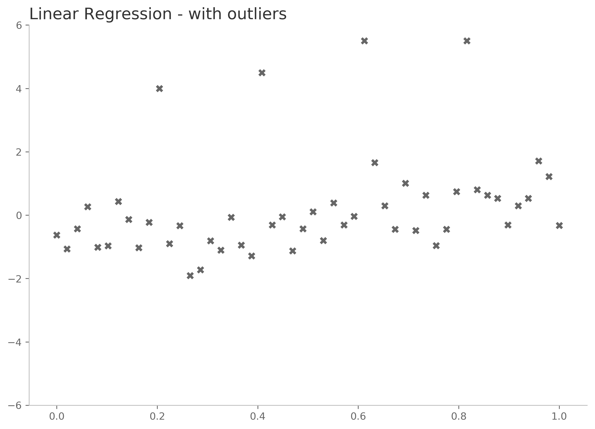 --- <h3 class="slide-header">Robust Regression - sample data</h3> 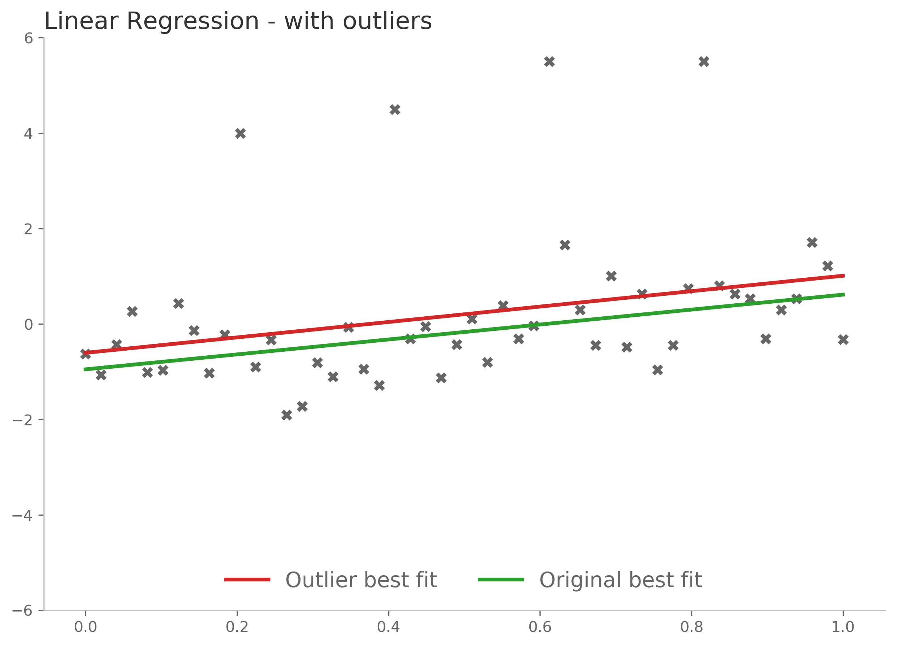 --- <h3 class="slide-header">Robust Regression</h3> ```python with pm.Model() as model: # prior distributions sigma = pm.HalfCauchy('sigma', beta=10) slope = pm.Normal('slope', mu=0, sd=20) intercept = pm.Normal('intercept', mu=0, sd=20) nu = pm.Exponential('nu', lam=1/5000) # nu parameter for student-t # likelihood function - now using student-t instead of normal likelihood = pm.StudentT( 'likelihood', mu=intercept + slope*x, sd=sigma, nu=nu+1, observed=y ) # sampling step trace = pm.sample() ``` --- <h3 class="slide-header">Robust Regression - results</h3> 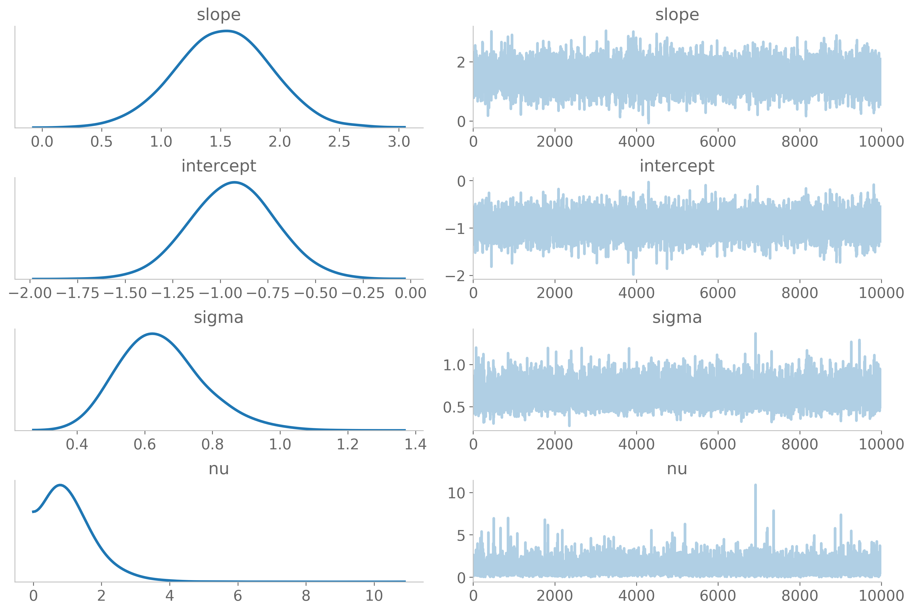 --- <h3 class="slide-header">Robust Regression - results</h3> 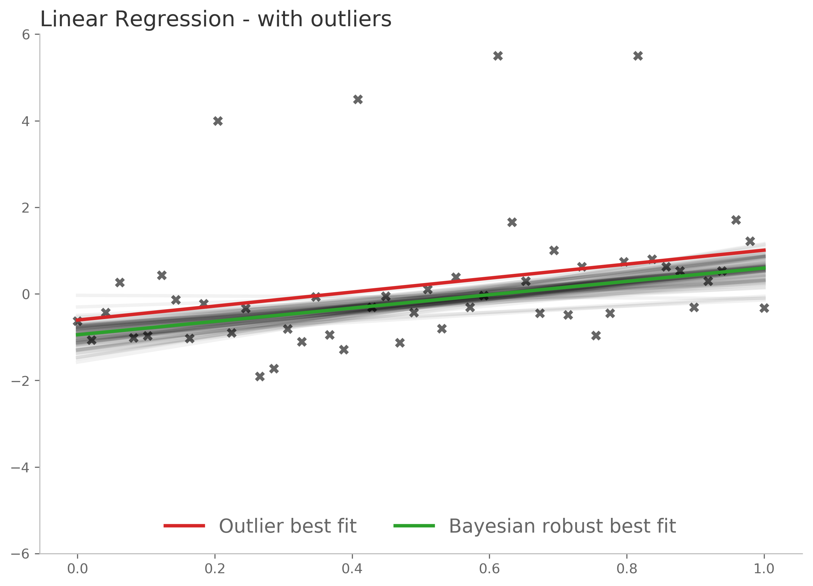 --- <h3 class="slide-header">Takeaways - business value</h3> - In this example, outliers were easy to spot visually. - Large datasets may be impossible to inspect visually. - How do you decide what qualifies as an outlier? -- <hr> - Bayesian techniques quantify inferences on a dataset. - Assumptions are explicit, and can be scrutinized and refined. - Bayesian models make it easy to reproduce analytic conclusions. --- <h1><span class="text-muted" style="font-weight: 200;">Next Steps:</span><br>Where to go from here</h1> --- <h3 class="slide-header">Gaussian Processes</h3> Distribution of possible _functions_ to fit data <img src="https://upload.wikimedia.org/wikipedia/commons/7/7f/Gaussian_Process_Regression.png" class="img-fluid mx-auto d-block" style="max-width: 100%;"> <p class="text-muted" style="font-size: 0.5em;">Image: Wikipedia</p> --- <h3 class="slide-header">Bayesian Neural Networks</h3> Neural network with priors and posteriors for model weights. Allow your models to express uncertainty in predictions. <img src="https://brendanhasz.github.io/assets/img/dual-headed/TwoHeadedNet.svg" class="img-fluid mx-auto d-block" style="max-width: 75%;"> <p class="text-muted" style="font-size: 0.5em;">Image: brendanhasz.github.io</p> --- <h3 class="slide-header">Bayesian Hierarchical Models</h3> Combine group-level and individual-level models,<br>e.g. county-level and home-level <img src="https://www.ahajournals.org/cms/attachment/6cd87faf-e3b3-4fd0-bcdc-c61c393fbbfc/hcq0061103360002.jpg" class="img-fluid mx-auto d-block" style="max-width: 75%;"> <p class="text-muted" style="font-size: 0.5em;">Image: ahajournals</p> --- <h3 class="slide-header">Takeaways</h3> -- _Bayesian techniques_ - Are becoming easier to use with new technology - Combine expert judgment and data to quantify hypotheses - Produce the full distribution of potential outcomes -- <br> _Consider_ - Using Student-t distributions instead of normal distributions - Adding uncertainty estimates to your charts - Building simple models with pymc3 (copy the code in this deck!) - Extend the examples here, then research wider applications ---